Zhe (Jack) XuPh.D. Candidate
Massachusetts General Hospital, Harvard Medical School & |
 @Boston, 🇺🇸 |


Biography
I am a final-year Ph.D. candidate at The Chinese University of Hong Kong, supervised by Prof. Raymond Tong (AIMBE Fellow). I am also co-trained at CAMCA, Massachusetts General Hospital, Harvard Medical School, supervised by Prof. Quanzheng Li. I obtained my M.S. in Computer Science at Tsinghua University in 2021, supervised by Prof. Xiu Li (joint training at SPL, Brigham and Women's Hospital, Harvard Medical School, working closely with Prof. Jayender Jagadeesan, Prof. Sandy Wells), and B.Eng in Electronic Engineering and B.Sc in Management from UESTC in 2018. I also work closely with Tencent Youtu Jarvis Center led by Dr. Yefeng Zheng (IEEE Fellow) since 2020. I'm a recipient of the Hong Kong PhD Fellowship (HKPFS).
My research lies at advancing medical image analysis with AI to achieve affordable-yet-accurate medical decision-making, with recent focus on 1) learning under various imperfect data scenarios (e.g., label/data scarcity, noise and heterogeneity), 2) multimodal data supported representation learning and decision making, 3) data-centric, human-in-the-loop, continual learning for generalizable real-world agents, 4) generative AI for brain decoding and medical data enhancement.
News
- [07/2024] Scalable Multi-modal Medical Agent (MMedAgent) is online!
- [06/2024] 2 papers on label-efficient and foundation model were accepted by MICCAI 2024. See you in Morocco!
- [02/2024] D-Persona on multi-rater segmentation accepted by CVPR 2024 with Highlight (2.8%)! Congrats to Yicheng!
- [02/2024] Our trustworthy radiology report generation accepted by Neurocomputing (IF=6.0)! Congrats to Yixin!
- [01/2024] Our SCL for MS-SSL was accepted by Medical Image Analysis (IF=10.9)!
- [12/2023] Moved to Boston, USA and joined CAMCA, MGH/Harvard Medical School as a visiting PhD student!
- [10/2023] Glad to be awarded as a IEEE TMI Distinguished Reviewer (Gold Level)!
- [10/2023] Glad to be in MICCAI'23 Best Paper and Young Scientist Award finalist (Top 25 out of 730 accepted papers)!
- [07/2023] Glad to receive MICCAI STAR Award (aka. Travel Award)!
- [06/2023] Our MTCL is part of tutorial in DLMA‘23 summer camp of TUM (hosted by Prof. Nassir Navab)!
- [06/2023] Our AC-MT for SSL was accepted by Medical Image Analysis (IF=10.9)!
- [06/2023] 4 papers on label-efficient/multimodal learning accepted by MICCAI 2023 (2 early accept(14%), 1 oral(3%))!
- [05/2023] 1 mentoring paper on SFUDA was accepted by Computers in Biology and Medicine (IF=7.7)!
- [03/2023] 1 paper on SSL accepted by EMBC 2023 (oral)!
- [02/2023] ProtoSeg on active histopathology analysis was accepted by IPMI 2023 (oral)! Congrats to Jiangpeng,Wentao!
- [10/2022] 1 joint paper Learn2Reg on DL-oriented multi-task image registration benchmark was accepted by IEEE TMI!
- [09/2022] Attending MICCAI’22 in Singapore! Welcome to catch up:)
- [07/2022] Passed the qualified exam towards a PhD candidate!
- [06/2022] 2 joint papers on image registration and landmark error screening were accepted by MICCAI 2022 (~31%)!
- [05/2022] Awarded Talent Development Scholarship on Innovation, science and technology from HK Gov!
- [05/2022] Our MTCL for learning segmentation with noisy labels was accepted by IEEE TMI (IF=11.037)!
- [05/2022] 2 papers on image registration and SFUDA early accepted by MICCAI 2022 (Top 13%)!
- [03/2022] Our CPCL, a supervised-like semi-supervised segmentation, was accepted by IEEE J-BHI!
- [01/2022] 1 paper on cross-domain few-shot learning accepted by ICASSP 2022. Congrats to Yixin!
- [09/2021] Invited to give oral presentation at MICCAI Learn2Reg and contribute to the Challenge paper.
- [06/2021] Awarded as Outstanding Graduate of Beijing; Thank you, THU and Harvard! Moving to Hong Kong!
- [05/2021] 2 papers on noisy-label segmentation and WSI segmentation early accepted by MICCAI 2021 (Top 13%)!
- [04/2021] Glad to be Hong Kong PhD Fellowship (HKPFS) Awardee
- [01/2021] 3 papers on image registration accepted by ISBI 2021, ICASSP 2021, and IJCARS
- [10/2020] Awarded National Scholarship (for postgraduate) at Tsinghua
- [06/2020] 1 paper on synthesis-based multimodal registration accepted by MICCAI 2020!
- [09/2019] Moved to Boston, USA and joined SPL of Harvard
- [06/2019] Our startup "CloudSpace: AI+design" won a Gold Award in the Greater Bay Area Entrepreneurship Competition
Selected Publications | Full List
| /*Journal*/ | |
| 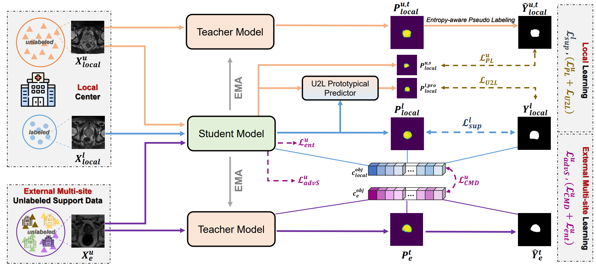 |
Separated Collaborative Learning for Semi-supervised Prostate Segmentation with Multi-site Heterogeneous Unlabeled MRI Data Zhe Xu, Donghuan Lu, Jie Luo, Yefeng Zheng, Raymond Tong Medical Image Analysis (MedIA), 2024.(IF: 10.9, JCR-Q1) [paper] |
| 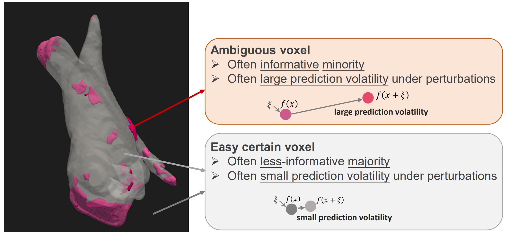 |
Ambiguity-selective Consistency Regularization for Mean-Teacher Semi-supervised Medical Image Segmentation Zhe Xu, Yixin Wang, Donghuan Lu, Xiangde Luo, Jiangpeng Yan, Yefeng Zheng, Raymond Tong Medical Image Analysis (MedIA), 2023.(IF: 10.9, JCR-Q1) [paper, code] |

|
Anti-interference from Noisy Labels: Mean-Teacher-assisted Confident Learning for Medical Image Segmentation Zhe Xu, Donghuan Lu, Jie Luo, Yixin Wang, Jiangpeng Yan, Kai Ma, Yefeng Zheng, Raymond Tong IEEE Transactions on Medical Imaging (TMI), 2022.(IF: 11.037, JCR-Q1) [paper, code] |

|
All-Around Real Label Supervision: Cyclic Prototype Consistency Learning for Semi-supervised Medical Image Segmentation Zhe Xu, Yixin Wang, Donghuan Lu, Lequan Yu, Jiangpeng Yan, Jie Luo, Kai Ma, Yefeng Zheng, Raymond Kai-yu Tong IEEE Journal of Biomedical and Health Informatics (J-BHI), 2022.(IF: 7.021, JCR-Q1) [paper, code] |

|
Trust It or Not: Confidence-Guided Automatic Radiology Report Generation Yixin Wang*, Zihao Lin*, Zhe Xu, Haoyu Dong, Jiang Tian, Jie Luo, Zhongchao Shi, Lifu Huang, Yang Zhang, Jianping Fan, Zhiqiang He. (* equal contribution) Neurocomputing, 2024.(IF: 6.0, JCR-Q1) [paper] |
| 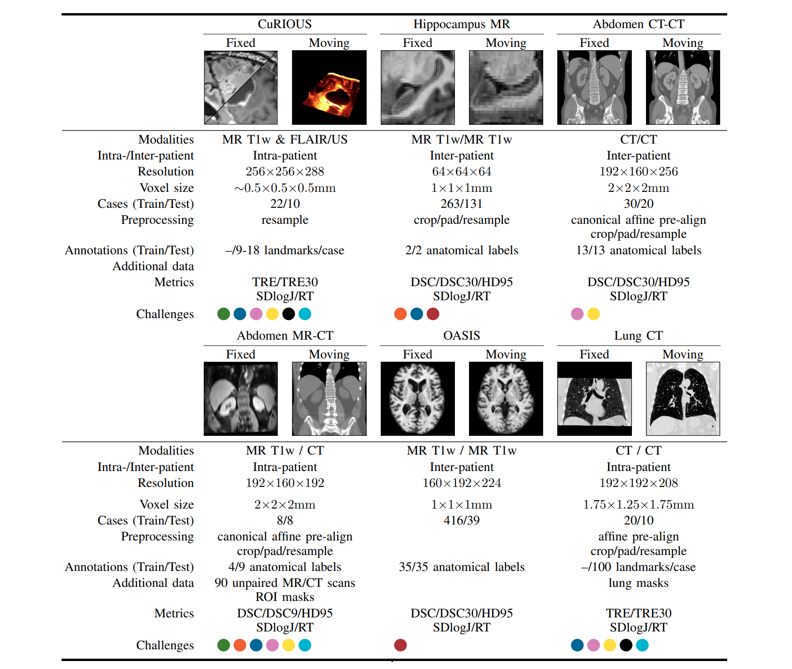 |
Learn2Reg: comprehensive multi-task medical image registration challenge, dataset and evaluation in the era of deep learning Wentao Pan, Zhe Xu (ADLReg | THU Team)
Full Author List: Alessa Hering, Lasse Hansen, Tony C. W. Mok, Albert C. S. Chung, Hanna Siebert, Stephanie Häger, Annkristin Lange, Sven Kuckertz, Stefan Heldmann, Wei Shao, Sulaiman Vesal, Mirabela Rusu, Geoffrey Sonn, Théo Estienne, Maria Vakalopoulou, Luyi Han, Yunzhi Huang, Pew-Thian Yap, Mikael Brudfors, Yaël Balbastre, Samuel Joutard, Marc Modat, Gal Lifshitz, Dan Raviv, Jinxin Lv, Qiang Li, Vincent Jaouen, Dimitris Visvikis, Constance Fourcade, Mathieu Rubeaux, Wentao Pan, Zhe Xu, Bailiang Jian, Francesca De Benetti, Marek Wodzinski, Niklas Gunnarsson, Jens Sjölund, Daniel Grzech, Huaqi Qiu, Zeju Li, Alexander Thorley, Jinming Duan, Christoph Großbröhmer, Andrew Hoopes, Ingerid Reinertsen, Yiming Xiao, Bennett Landman, Yuankai Huo, Keelin Murphy, Nikolas Lessmann, Bram van Ginneken, Adrian V. Dalca, Mattias P. Heinrich
IEEE Transactions on Medical Imaging (TMI), 2022. (IF: 11.037, JCR-Q1) [paper, page, our code] |
| /*Conference*/ | |

|
Diversified and Personalized Multi-rater Medical Image Segmentation Yicheng Wu*, Xiangde Luo*, Zhe Xu, Xiaoqing Guo, Lie Ju, Zongyuan Ge, Wenjun Liao, and Jianfei Cai IEEE Conference on Computer Vision and Pattern Recognition (CVPR), 2024.(Highlight) [paper, code] |
| 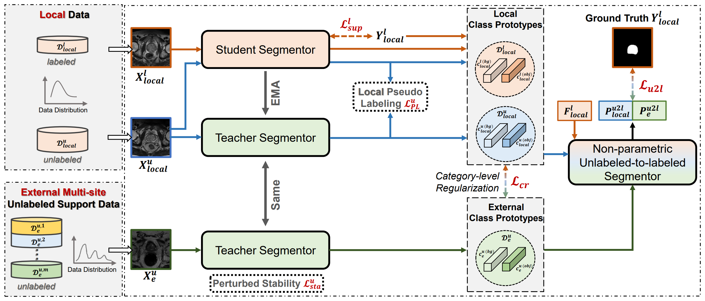 |
Category-Level Regularized Unlabeled-to-Labeled Learning for Semi-supervised Prostate Segmentation with Multi-site Unlabeled Data Zhe Xu, Donghuan Lu, Jiangpeng Yan, Jinghan Sun, Jie Luo, Dong Wei, Sarah Frisken, Quanzheng Li, Yefeng Zheng, Raymond Tong Medical Image Computing and Computer Assisted Interventions (MICCAI), 2023.(Oral, early accept) [paper] |
| 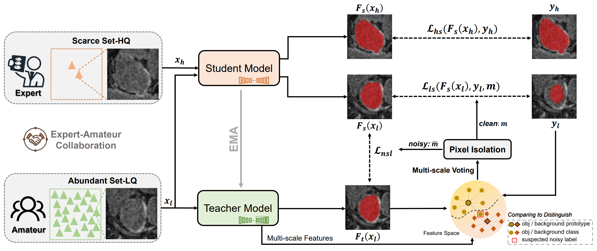 |
Towards Expert-Amateur Collaboration: Prototypical Label Isolation Learning for Left Atrium Segmentation with Mixed-Quality Labels Zhe Xu, Jiangpeng Yan, Donghuan Lu, Yixin Wang, Jie Luo, Yefeng Zheng, Raymond Tong Medical Image Computing and Computer Assisted Interventions (MICCAI), 2023.[paper, code] |

|
You've Got Two Teachers: Co-evolutionary Image and Report Distillation for Semi-supervised Anatomical Abnormality Detection in Chest X-ray Jinghan Sun*, Dong Wei*, Zhe Xu, Donghuan Lu, Hong Liu, Liansheng Wang, Yefeng Zheng (* equal contribution) Medical Image Computing and Computer Assisted Interventions (MICCAI), 2023.(early accept) [paper, code] |

|
Weakly Supervised Medical Image Segmentation via Superpixel-guided Scribble Walking and Class-wise Contrastive Regularization Meng Zhou*, Zhe Xu*^, Kang Zhou, Raymond Tong^ (^corresponding) Medical Image Computing and Computer Assisted Interventions (MICCAI), 2023.[paper, code] |
| 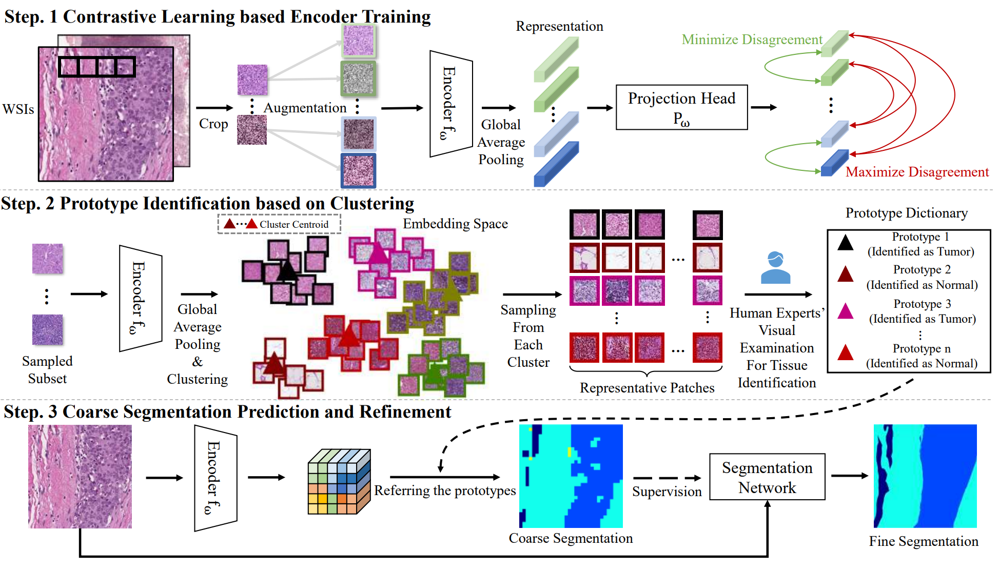 |
Human-machine Interactive Tissue Prototype Learning for Label-efficient Histopathology Image Segmentation Wentao Pan*, Jiangpeng Yan*, Hanbo Chen*, Jiawei Yang, Zhe Xu, Xiu Li, Jianhua Yao (* equal contribution) Information Processing in Medical Imaging (IPMI), 2023.(Oral) [paper, code] |

|
Double-Uncertainty Guided Spatial and Temporal Consistency Regularization Weighting for Learning-based Abdominal Registration Zhe Xu, Jie Luo, Donghuan Lu, Jiangpeng Yan, Sarah Frisken, Jayender Jagadeesan, William Wells III, Xiu Li, Yefeng Zheng, Raymond Tong Medical Image Computing and Computer Assisted Interventions (MICCAI), 2022.(early accept) [paper] |

|
Denoising for Relaxing: Unsupervised Domain Adaptive Fundus Image Segmentation without Source Data Zhe Xu, Donghuan Lu, Yixin Wang, Jie Luo, Dong Wei, Yefeng Zheng, Raymond Tong Medical Image Computing and Computer Assisted Interventions (MICCAI), 2022.(early accept) [paper][Extended application of our MTCL (MICCAI'21)] |

|
Noisy Labels are Treasure: Mean-Teacher-assisted Confident Learning for Hepatic Vessel Segmentation Zhe Xu, Donghuan Lu, Yixin Wang, Jie Luo, Jayender Jagadeesan, Kai Ma, Yefeng Zheng, Xiu Li Medical Image Computing and Computer Assisted Interventions (MICCAI), 2021.(early accept) [paper, code][Part of tutorial for DLMA at TUM] |
| 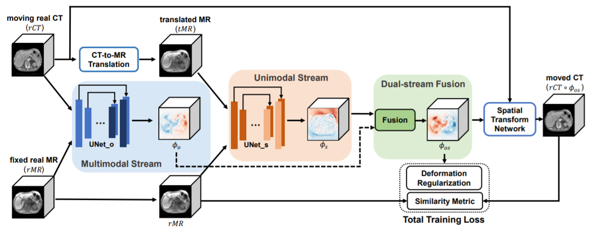 |
Adversarial Uni-and Multi-modal Stream Networks for Multimodal Image Registration Zhe Xu, Jie Luo, Jiangpeng Yan, Ritvik Pulya, Xiu Li, William Wells III, Jayender Jagadeesan. Medical Image Computing and Computer Assisted Interventions (MICCAI), 2020.(Oral) [paper] [Nice Follow-up: MedIA@JHU, DDMReg(TMI)@Harvard] |
| /*Preprint*/ | |
| 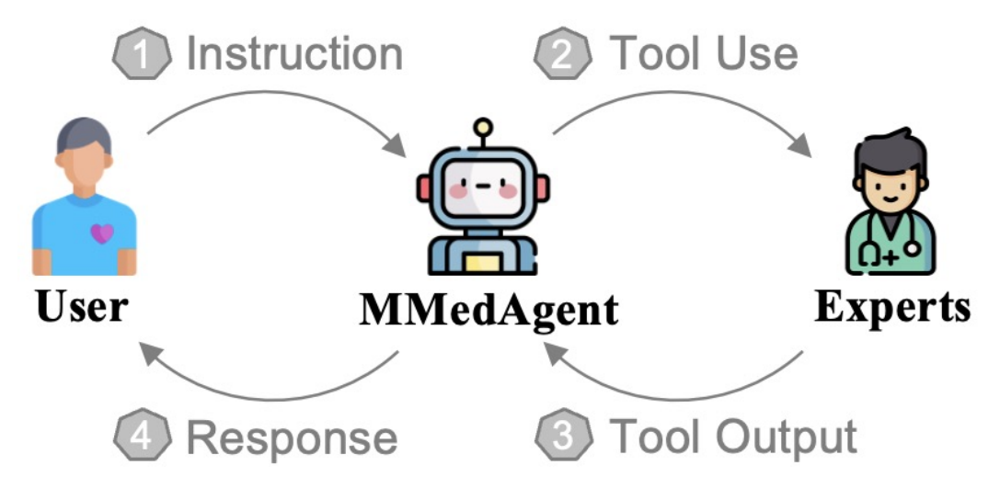 |
MMedAgent: Learning to Use Medical Tools with Multi-modal Agent Binxu Li, Tiankai Yan, Yuanting Pan, Zhe Xu, Jie Luo, Ruiyang Ji, Shilong Liu, Haoyu Dong, Zihao Lin, Yixin Wang Under Review, 2024. [paper, code, Recs.: Autonomous Agents, Tool Learning] |
| 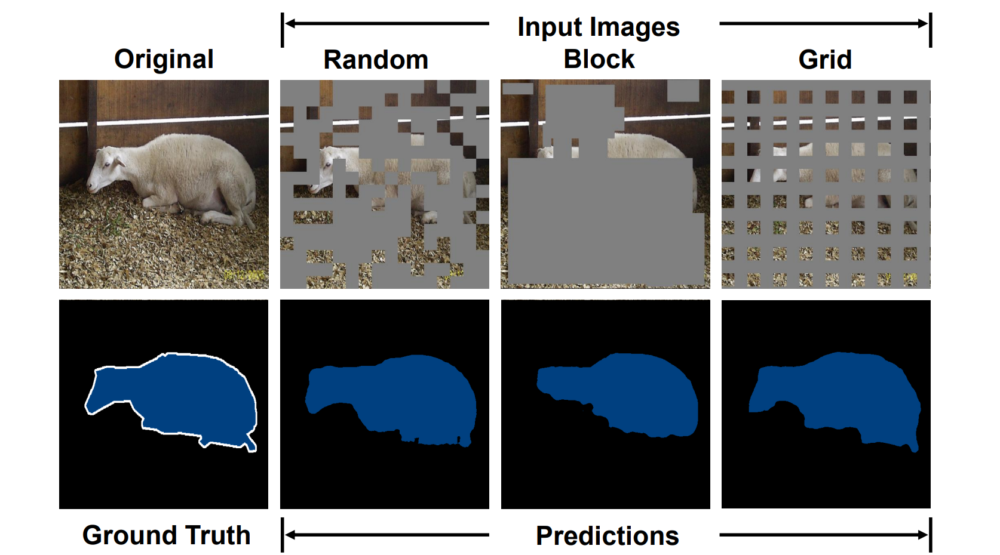 |
Semi-supervised Semantic Segmentation Meets Masked Modeling: Fine-grained Locality Learning Matters in Consistency Regularization Weitao Pan, Zhe Xu, Jiangpeng Yan, Zihan Wu, Raymond Tong, Jianhua Yao. Under Review, 2023. [paper] |
| 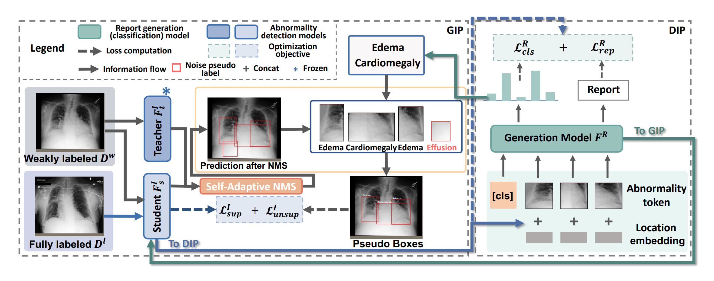 |
Unlocking the Potential of Weakly Labeled Data: A Co-Evolutionary Learning Framework for Abnormality Detection and Report Generation Jinghan Sun*, Dong Wei*, Zhe Xu, Donghuan Lu, Hong Liu, Hong Wang, Liansheng Wang, Yefeng Zheng. (* equal contribution) Major Revision in IEEE TMI, 2023. [paper, code] |
| 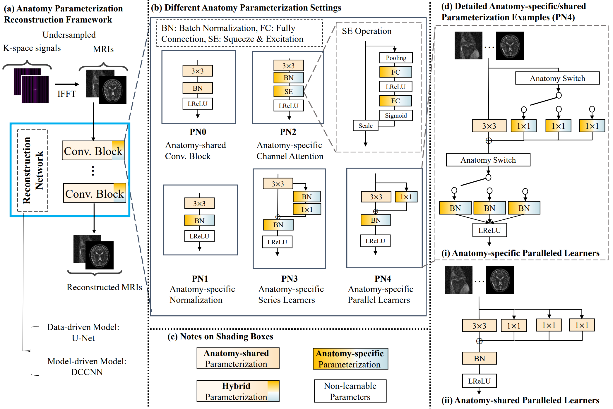 |
Seeking Common Ground While Reserving Differences: Multiple Anatomy Collaborative Framework for Undersampled MRI Reconstruction Jiangpeng Yan, Chenghui Yu, Hanbo Chen, Zhe Xu, Junzhou Huang, Xiu Li, Jianhua Yao. Under Review in MedIA, 2023. [paper] |
Honors & Awards
| 2024, Reaching Out Award (HKSAR Gov Fund) |
| 2024, Overseas Research Attachment Programme (CUHK Engineering) |
| 2023, IEEE TMI Distinguished Reviewer (Gold Level) |
| 2023, MICCAI Best Paper and Young Scientist Award Finalist |
| 2023, MICCAI STudent-Author Registration (STAR) Award |
| 2022, Hong Kong,China-Asia-Pacific Economic Cooperation Scholarship (APEC Scholarship.) |
| 2022, Talent Development Scholarship on Innovation, science and technology (HKSAR Gov.) |
| 2021-2025, Hong Kong PhD Fellowship (HKPFS) & CUHK Vice-Chancellor’s Scholarship |
| 2021, Outstanding Graduate of Beijing |
| 2016/2020, China National Scholarship (for undergraduate / postgraduate) |
| 2019, Gold Prize of Guangdong-HK-Macao Greater Bay Area College Social Entrepreneurship Challenge |
| 2017, Silver Award in National Entrepreneurship Competition for college students |
| 2016, First Prize of China Undergraduate Mathematical Contest in Modeling (CUMCM) |
Professional Services
-
Regular Reviewers/PC Member:
Computer Vision and Pattern Recognition (CVPR)
International Conference on Computer Vision (ICCV)
European Conference on Computer Vision (ECCV)
AAAI Conference on Artificial Intelligence
International Conference on Medical Image Computing and Computer-Assisted Intervention (MICCAI)
Medical Imaging with Deep Learning (MIDL)
IEEE Transactions on Pattern Analysis and Machine Intelligence (TPAMI)
IEEE Transactions on Medical Imaging (TMI-Gold Distinguished Reviewer)
IEEE Journal of Biomedical and Health Informatics (J-BHI)
Neurocomputing
Information Fusion
Medical Physics
Teaching
| 2022-2023 | Fall | Big Data in Healthcare (TA, BMEG 3103) | 2021-2022 | Spring | Big Data in Healthcare (TA, BMEG 3103) |
Misc.
Curiosity drives my research, also my life. I pursue credo of "Work Smart, Play Hard", where I enjoy traveling (all over China, 20+ countries [Vlogs]), surfskate, snowboard, Frisbee, SCUBA diving (PADI), (wake-)surfing, non-convex gradient ascent (hiking), cocktail and jazz blues. I spent some of my vacations on volunteering, e.g., English teaching in Cambodia and protecting animals in Thailand, Indonesia and Nepal.